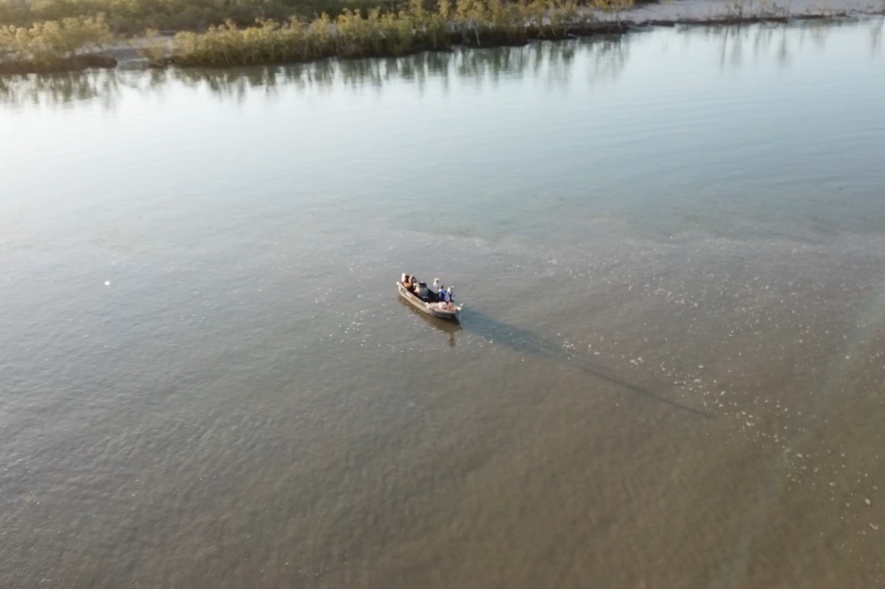
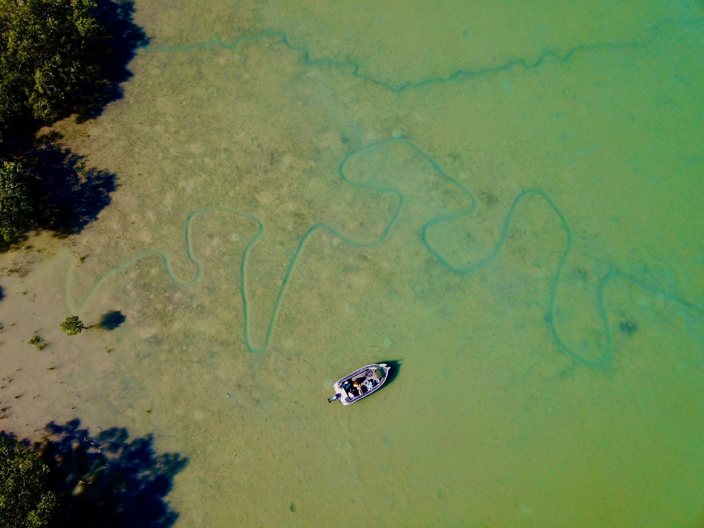

Bag a Barra, Oz Off Road Radio · 3AW / Nine Radio
Friday 6 November 2026

Listen · 9 min
Originally broadcast on 3AW / Nine Radio. Listen on the Bag a Barra, Oz Off Road Radio.
It's time to head to the Top End and Bag a Barra, with Glenn Watty Watt, thanks to Barefoot Fishing Safaris and Uniden, for the best in UHF radio communications. Explore the extract series at uniden.com.au. Well, our next play as you know, you know, he's, you know, he's a legend up there in the Top End. He's a fishing guru.
He's all these things, but I've got to say, I'm just not sure how smart he is because he's taken me. Look, if you've listened to us for a while here, you'll know that we've spoken about corroborating Billabong and he's taken me there twice and I think the 1st time I caught, you know, a mediacre Barra, the last time I went there with him. I got nothing. and he's always talking it up there. Then he then he has the audacity to send me photos of the size of the Barramundi that he caught a corrobory bullabong.
The thing was huge. It was bigger than Texas. There's only one little problem for Watty. He was there a bit late, because I learnt through the week, that somebody, some lucky angler, jagged a $1000000 Barramundi out of Corroboree Bulabong.
I mean, it's imbecile who, you know, wraps himself as being the man up there. He's gone there the wrong day. He's taken me there when there's nothing biting. What have you got to say for yourself, sir?
Mate, everyone needs this robbery billabong this year feeling a bit ripped off, then... Including the bloke down here. I've spent a fair few days there meself and there'd be guys up here that have spent 100 days fishing that billabong this year and caught plenty of barrett too, but you've just got to get the right one. That's the trick. fishing's all about luck, isn't it?
Comes, I mean, you can have all the skill, but it's a lot of lucky involved. Like the girl who threw the handline in that the drain culvert in 110 K. Yeah, that happened, and that happened, and then you got this bloke, he's turned up there, and he's jagged a $1000000 mate, you know what?
If you had one on that got off, you'd be kicking yourself thinking, I wonder if that was it. Oh, every time. yeah absolutely. I mean, that is big, isn't it?
that, that, that, obviously, a $1000000 tag fish was actually in our favourite spot. Unreal. Yeah, that's right, mate. Yeah.
And that's the way it goes. They put all those tagged fish into the most popular fished areas right across the Top End right down to Catherine River. I mean, you remember the 1st one that got caught, the $1000000 barra was in out of the Catherine River. So, yeah, they're spread all around.
They put a fair bit of work into making sure that everyone gets a chance. So, yeah, that's what you need is just a little bit extra luck. Has our mate save it up yet? I don't know what he'd be up to right now.
He's probably looking at the catalogues of new boats fairly regularly right now, I'd say, but yeah, that's the life-changing event, that's for sure. Yeah, unreal. I mean you've taken me there. You've been there heaps of times.
You sent me photos, days after this folk's won the million. I mean, I don't know how you could even come to doing that. I'll tell you what, it wasn't a bad size though. Yeah, that's right.
fish are biting pretty well out of Corroboree at the moment. You know, the water temp's heated up. We getting a bit of rain and this time of year as well, the water cleans right up. So it's actually really beautiful, clean, green sort of colour this time of year and the fishing goes right off and yeah, I mean, if you get that one with a tag in it, it's a whole nother story again, isn't it?
But unluckily for us, not quite yet. I'm back out there. tomorrow, so you never know. Yeah, well. So now, where are you now?
You're on Darwin Harbour. Yeah, we're on Darwin Harbour. We're right in the middle of a big bust up of bait being chased around by big queenfish and mackerel of a few different types. There's birds everywhere.
There's a few boats chasing them around. We've got pod and these couple of young fellas here and we're leaning into a couple of big queenies here right now, so that's pretty good fun. Yeah, that's good, isn't it? I mean, love it when we get you on the boat, which seems to happen a little bit more often these days.
You do a lot of fishing this time of year, obviously. Well, yeah, this is, I mean, the buildup time is, um, is a real um, favourite time of mine, of course, and and when we're really busy doing the extended trips. So, yeah, at least every 2nd week where we're out and about on the water and um, yeah. Well, I think we were catching queenfish this time last week when I spoke to you as well, but we're in a very different spot and there's, oh, there's a natural, that one. And those ones are much bigger too.
So it's a nice knuckle. hopefully just about be meted here. Yeah? Oh, well, we're getting it GI.
I mean, how good is this? Doesn't get much more real than this, does it? Okay, fishing in the Top End and we're literally going... Three. Oh, you got it.
It got out of the net. Don't swear, don't swear. Don't swear. Dad missed the next shot for the start.
He goes on the 2nd go. We've got another fish jumping, big queenie. Alright, here we go. Unbelievable.
It's all happened. Now, listen, now that the old mate's won the million. Is there still like 10 grand fish still swimming around that you can catch or what's the story? There's still, there's been four, 10 grand is taught so far.
So there's still 96 or thereabouts. 10 grand is still available. So yeah, all hope is not lost yet, mate. But yeah, the $1000000 fish has been claimed for this year, that's for sure.
That is unbelievable. I've got to say to you and I mean, we've been talking about this on the radio for years. I mean, it's been going for a long time. It's a great initiative, isn't it?
Like, it's a great thing for local tourism up there in the territory. I mean, it's been popular. Yeah, it is popular and everyone talks about it and especially for the locals, it's great because we get to spend more time fishing than most of the tourists disappear by end of September. So, yeah, it gives us a better chance as well.
And oh, mate, those 2 blakes who sold up everything, left their jobs. I mean, they'd just be kicking themselves. I wonder if they were on Corroboree over the last few weeks. Well, yeah, that's right.
I do see those boys around every now and then. There we go. We got another one in the neck. Cleanfish.
We got mackerel blood slapping around everywhere here. chaos. So we've got 3 fish just in this during this conversation. How good is it?
Yeah, we got 2 landed and a couple of missed ones, yeah. Yeah, right, okay. All right. Well, it sounds fantastic.
It's all happening up there in the Top End as it usually does. I mean. And look quickly. How many Christmas parties have you been to so far?
I mean, we're into November now? No, we have ticked ticked one off, mate. Yeah, so we're working into it. Just got a warm-up slowly.
Yeah, no, fair enough. Was it big? No, just a little warm-up one. You don't want to you don't want to pull a muscle too early on the Christmas hour.
Fair enough, I mean, mate. Mate, it must be good up there this time of year. Oh, yeah, my favourite time of year. I mean, everything's greened up again nicely and you get these awesome fishing conditions as well as the weather changing, so it's great.
Yeah, no fair enough. All right, mate. Well, well done. And well with under that bloke who won that $1000000 or what I'll say, one, he caught the $1000000 fish.
Well done to him. That's right, yeah. And you're good to see. It's good to see, you know, normal people out there, a bit of luck, bit of, you know, bit of persistence, and he's jagged himself a 1000000 bucks. I can't really say much the same for the girl who just threw a handline in into the drain Culvert or wherever it was.
Yeah, that's right. Well, everyone deserves it, mate. If you're out there having a crack, yeah. Yeah, no, true.
No, but I mean, that's just, I mean, you know what? I can say that. Well done to her. How good is it, really?
That was a few years ago now, wasn't it? Good honour. Yeah, that was a few years ago, yeah. Bent to the survey, bought a hand reel, threw it in and 110 grand.
Good luck to it, mate. I got to say, we're all about good luck. I like the bloke who won the big os lotto the other night. I mean, good on him.
He won the lot. Oh, did he, right? Millions. Yeah, some blue. Yeah, I saw that somewhere too, mate.
you know, good on you, mate. I mean, in these times, you know, times of tough times. It's good to see people jagging a few bucks, mate, doing stuff they love, eh? It's a lot of changing money.
So, some of that blood's yours. Is it scouting some of it's the fishes? Young fella just got bit by mackerel. We're gonna go and sort that out.
Righto. Well, you go and do that, mate, and we'll catch you next week, eh? All right, mate. Good on you.
Good on you. There he is. That's our man, Glenn. What do you want?
He is the guru up there in the Top End. Barefoot Fishing Safaris and he's missed out on the million. You know what? It was probably swimming around his boat a few days ago, that fish.
He couldn't get it. But anyway, well done to the bloke who did it, and of course, to that girl a few years ago. Lucky is that? I'd love to see people win a bit of money just for doing things they love.
you know, and good on them. I mean, like, you know, times are tough, aren't they? So, you know, if you can, if you can do it, and you can jag that, good luck to you, and we wish all of those people the very best, and, like I say, well done, well, mate, who won that $1000000 fish. How good is it?
I think a young bloke won a few years ago. Was it last year, the year before, he was only really young fellow, won that, and wanted to help his family out with the cash. I mean, you know, how good is it? The Top End.
It's a great part of the world. And let me tell you about something, the people about the people that live up there. They all territorians. They've all got each other's back and there wouldn't be too many people dirty on old mate. They're probably just cheering that a local court it, which is fantastic.
Anyway, Barefoot Fishing Safaris, if you want to get up there and get into the fish, you can, as you can see, what he does catch them. He caught a couple while he was talking to us. So you certainly get onto him up there, Barefoot Fishing Safaris in the Top End.